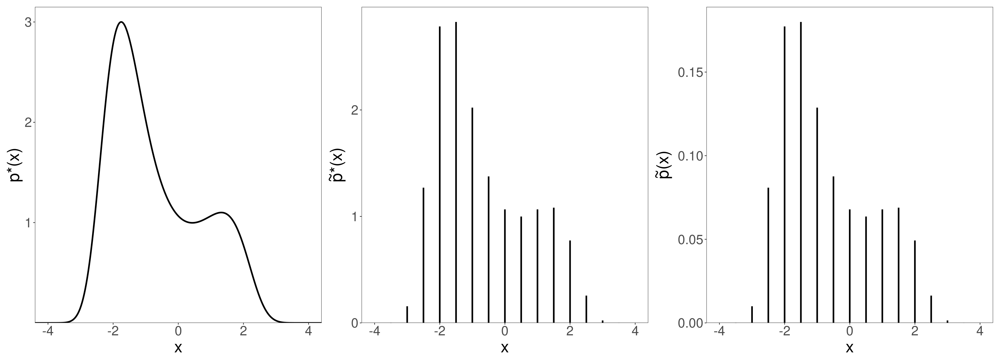
Métodos Computacionales
El Problema
Típicamente interesa resolver los siguientes problemas:
- Calcular integrales de la forma \(\mathbb{E}[\phi(x)] = \int \phi(x) p(x) d x\) (law of the unconscious statistician)
- Generar \(S\) muestras independientes \(x^{(s)}\) de una distribución de probabilidad \(p(x)\)
En la estadística bayesiana, \(x\) es \(\theta\), el parámetro desconocido de alguna distribución de probabilidad y \(p(x)\) es el posterior
Métodos de Montecarlo
Para el primer problema, sabemos que si \(X_i \sim p(x)\), bajo ciertas condiciones podemos aproximar
\[\mathbb{E}[X] \approx \frac{1}{N} \sum_{i=1}^N x_i\]
Si \(X\) es una variable aleatoria, entonces para funciones continuas \(\phi\) tenemos que \(\phi(X)\) también es una variable aleatoria y por lo tanto
\[\mathbb{E}[\phi(X)] = \int\phi(x)p(x)dx \approx \frac{1}{N} \sum_{i=1}^N \phi(x_i)\]
Es decir, si los \(x_i\) son muestras de \(p(x)\), entonces la integral \(\int\phi(x)p(x)dx\) puede aproximarse por \(\frac{1}{N} \sum_{i=1}^N \phi(x_i)\).
Esto ya lo hemos hecho
- La distribución predictiva a posteriori es \(\int p(y\mid \theta) p(\theta\mid y) d\theta\) y puede aproximarse por \(\frac{1}{N} \sum_{i=1}^N p(y\mid \theta_i)\)
- El riesgo bayesiano es \(\int L(\theta,\hat\theta) p(\theta\mid y) d\theta\) y puede aproximarse por \(\frac{1}{N} \sum_{i=1}^N L(\theta_i,\hat\theta)\)
- Si consideramos la integral \(\int \mathbb{I}_{\theta \in A} p(\theta\mid y) d\theta = \int_A p(\theta\mid y)d\theta\) es la probabilidad de que \(\theta\) esté en \(A\) y puede aproximarse por \(\frac{1}{N} \sum_{i=1}^N \mathbb{I}_{\theta_i \in A}\)
Teniendo muestras de \(p(x)\) es fácil estimar las integrales \(\mathbb{E}[\phi(x)] = \int \phi(x) p(x) d x\) por lo que nos centraremos en el problema de cómo obtener muestras de \(p(x)\).
Para algunas distribuciones de probabilidad es fácil obtener muestras. Pero no siempre existe una función rbinom, rbeta, rnorm, rpoiss, etc.
Tomar muestras de una distribución de probabilidad \(p(x)\) implica obtener valores que provienen, con mayor frecuencia, de regiones donde \(p(x)\) es grande. ¿Por qué es difícil tomar muestras de una distribución de probabilidad?
En estadística bayesiana tenemos \(p(\theta \mid y ) \propto p(y\mid\theta) p(\theta)\) por lo que en general llegamos a \(p^*(\theta \mid y) = \frac{1}{Z} p(\theta\mid y)\)
- La determinación de \(Z\) implica resolver una integral (potencialmente multivariada) que puede no tener solución analítica (intractability of the integral)
- Aún conociendo \(Z\), no hay una manera determinada de obtener muestras de \(p(\theta\mid y)\)
- Tomar muestras de distribuciones discretas es más fácil que hacerlo de distribuciones continuas
¿Cómo tomamos muestras de una distribución discreta?
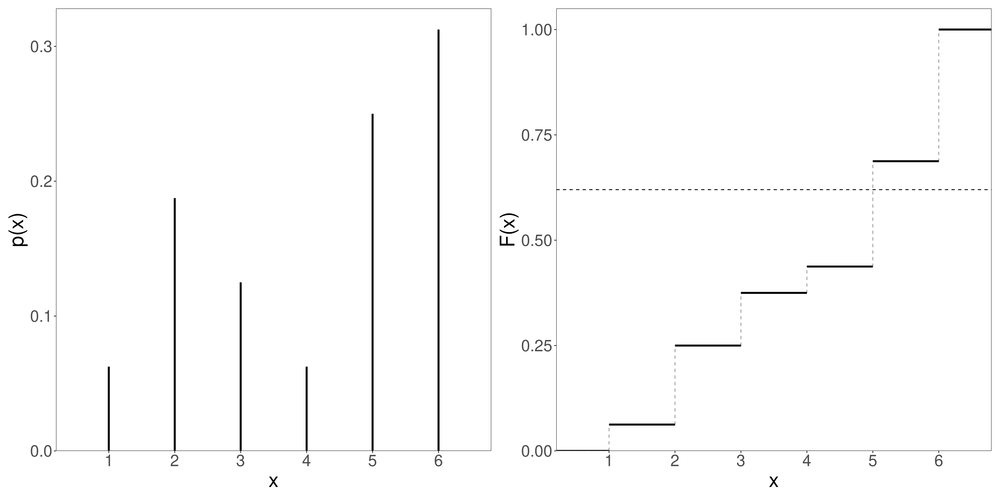Grid approximation
Una solución puede ser discretizar la variable. Esta solución vale incluso si no conocemos \(Z\). Conocemos \(p^*(x) = \frac{1}{Z} p(x)\) (izquierda) y pasamos a una discreta \(\tilde{p}^*(x) = \frac{1}{\tilde{Z}} \tilde{p}(x)\) (centro).
Evaluando \(\tilde{p}\) en todos los posibles \(x_i\) de la grilla podemos calcular \(Z=\sum_{i} \tilde{p}^*(x_i)\). Luego tomamos muestras de \(\tilde{p}(x)\) (derecha).
En código:
¿Cómo se aplica esto en estadística bayesiana?
El posterior es \(\frac{1}{Z} p(\theta\mid y) p(\theta)\). Sabemos calcular el valor del posterior (sin normalizar) para cualquier valor de \(\theta\): haciendo el producto del prior por el likelihood.
Podemos considerar una grilla de valores del parámetro (o los parámetros), computar el posterior sin normalizar para cada valor de la grilla, normalizarlo y tomar muestras de él.
Escala muy mal con el número de parámetros…
Ejemplo
Queremos realizar inferencias sobre la media y la varianza de una normal. Para eso proponemos el siguiente modelo: \[ \begin{align*} y_i\mid\mu,\sigma^2 & \sim \mathcal{N}(\mu,\sigma^2) \\ \mu,\sigma^2 & \sim \frac{1}{K} \frac{e^{-\sigma^2}}{\eta} e^{-\frac{(\mu - \xi)^2}{2\psi^2}} \end{align*} \] (¿Cuáles son las constantes que ajustan el prior)
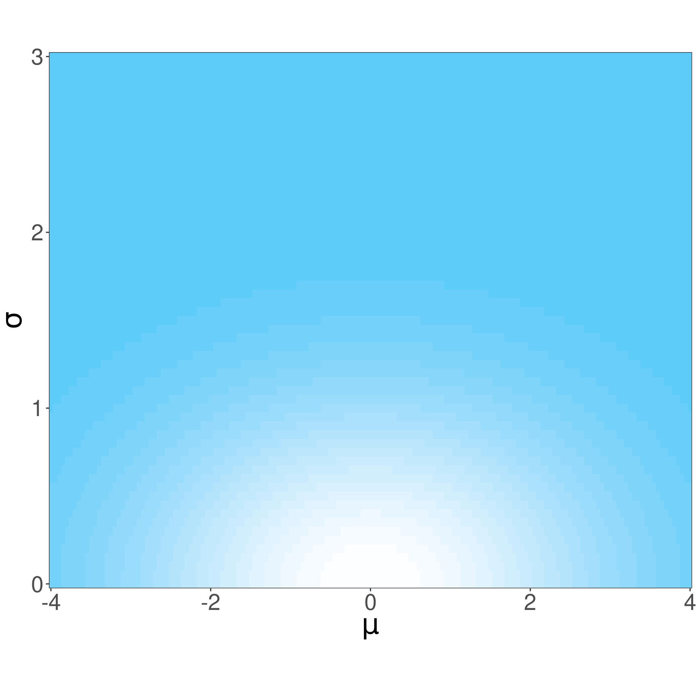
- Deberíamos tomar valores de \(\mu\) en el intervalo \((-4,4)\) y valores de \(\sigma\) en el intervalo \((0,3)\) y construir una grilla de valores.
- Para cada valor de la grilla podríamos calular el posterior sin normalizar haciendo el producto del prior por el likelihood (necesitamos la muestra).
Rejection sampling
Se basa en buscar una distribución de probabilidad candidata \(q(x)\) tal que \(Cq(x)\geq p^*(x)\). Se toma una muestra de \(q(x)\). Luego se toma una muestra \(u\) de \(\mathrm{Unif}(0,Cq(x))\). La muestra de \(q(x)\) se retiene si \(u<p^*(x)\).
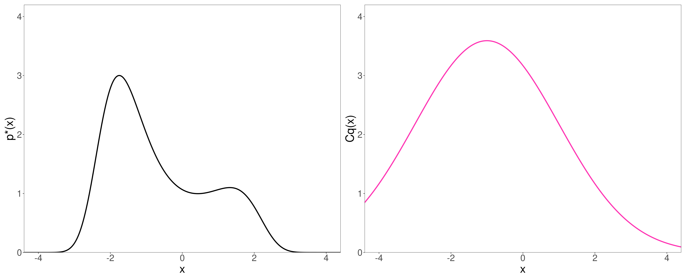Necesitamos elegir con cuidado \(q(x)\)
Markov chain Monte-Carlo
Queremos obtener muestras de \(p(x)\). Vamos a hacer un viaje por los distintos valores de \(x\) tratando de pasar más tiempo (más iteraciones) en los puntos donde \(p(x)\) es grande.
Idea general:
- Visitar los distintos valores posibles de \(x\)
- Generar una secuencia de iteraciones: \(\{x^{(1)},x^{(2)},\dots,x^{(S)}\}\)
- En general, para obtener \(x^{(i+1)}\) usamos \(x^{(i)}\)
- En nuestro caso tenemos \(p(\theta) \propto p(y\mid\theta)p(\theta) = p^*(\theta\mid y)\) (unnormalized posterior)
- ¿Qué necesitamos? Poder evaluar el prior y poder evaluar el likelihood para cualquier valor de \(\theta\)
Metropolis-Hastings (MH)
El algoritmo de Metropolis–Hastings (1953)
- Estamos la iteración \(i\) estamos en el valor del parámetro \(\theta^{(i)}\)
- En función del valor de parámetro actual \(\theta^{(i)}=\theta\), proponemos un nuevo valor \(\theta'\) en función de \(q(\theta'\mid\theta)\)
- Decidimos si vamos a la nueva ubicación \(\theta^{(i+1)} = \theta'\) o si nos quedamos \(\theta^{(i+1)} = \theta\):
- Calcular la probabilidad de salto: \[\alpha = \min\left\{ 1,\frac{f(\theta')}{f(\theta)} \right\}\]
- Pasar a \(\theta'\) con probabilidad \(\alpha\): \[\theta^{(i+1)} = \begin{cases} \theta' \text{ con probabilidad } \alpha \\ \theta \text{ con probabilidad } (1-\alpha) \end{cases}\]
\(q(\theta'\mid\theta)\) se llama distribución de proposición o de salto propuesto. Todo lo que necesitamos saber es dónde estamos \(f(\theta)\) y hacia donde queremos ir \(f(\theta')\).
Puede probarse que para cualquier \(q(\theta'\mid\theta)\), cuando \(s\to \infty\) la distribución de probabilidad de la secuencia \(\left\{\theta^{(s)} \right\}_{s=1}^S\) tiende a \(p(\theta)\). No sabemos nada sobre la rapidez con la que lo hace.
En infinitos pasos, cualquier cadena dará muestras de la distribución \(p(\theta)\), en la práctica hay que tener algunos cuidados.
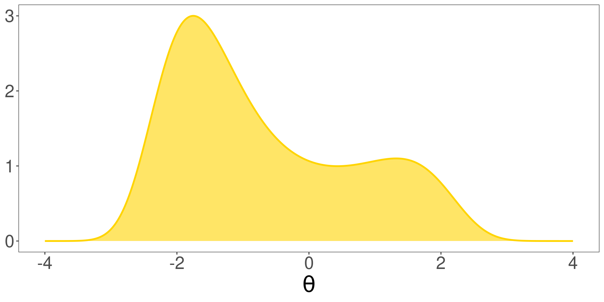
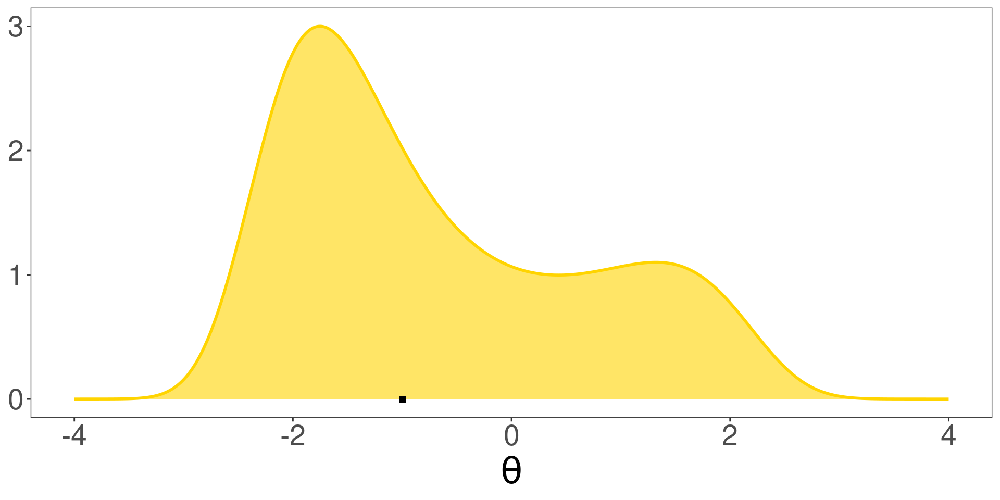
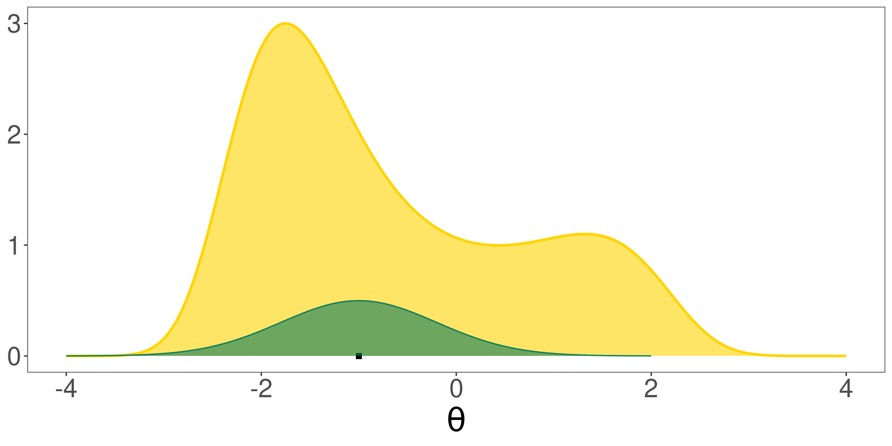
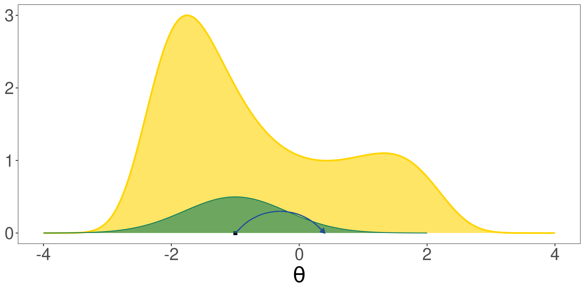

- Necesitamos muestras de \(p(\theta)\)
- Tomamos un punto inicial
- Elegimos una distribución de saltos posibles \(q(\theta'\mid\theta)\)
- Proponemos un salto
- ¿Saltamos?
theta <- double()
theta[1] <- -1
i <- 1
propuesta <- rnorm(1, mean = theta[i], sd = 0.8)
f_actual <- fx(theta[i])
f_propuesta <- fx(propuesta)
alpha <- min(c(1,f_propuesta/f_actual))
quehacemos <- sample(c("salto","no salto"),
size = 1,
prob = c(alpha,1-alpha))
if(quehacemos=="salto") {
theta[i+1] <- propuesta
} else {
theta[i+1] <- theta[i]
}Debe repetirse el proceso en un for
 \[\sigma = 0.8\]
\[\sigma = 0.8\]
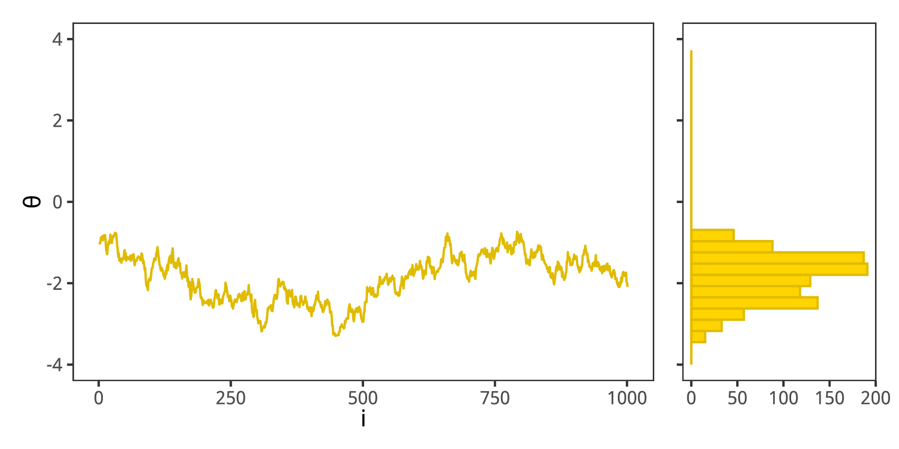 \[\sigma = 0.1\]
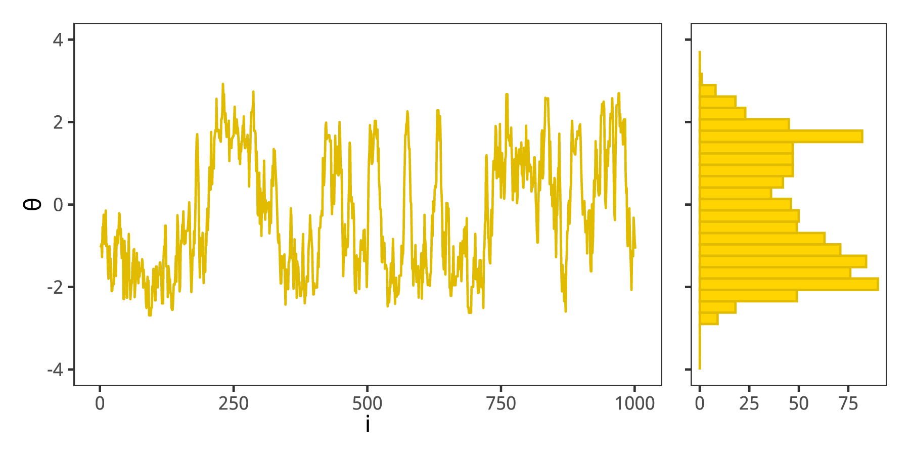 \[\sigma = 0.6\]
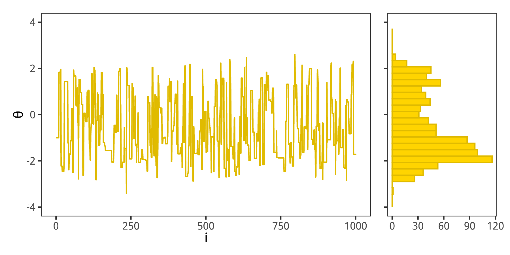 \[\sigma = 4.8\]
¿Qué esperamos de nuestra cadena?
- Representatividad: haber explorado el rango completo de la distribución a posteriori, independientemente de las condiciones iniciales
- Precisión y estabilidad: a lo largo de diferentes cadenas (distintas condiciones iniciales)
- Eficiencia: esperamos requerir la menor cantidad posible de muestras
Ningún objetivo se alcanza absolutamente, existen chequeos gráficos y numéricos para saber si las cadenas de MCMC están sanas.
Trace Plots
Graficar los valores que toma el algoritmo como función del tiempo (lo que típicamente llamamos la cadena). Se tiene que ver como un fuzzy caterpillar (buen mixing). Para los impresionables: ruido blanco sin ningún patrón particular.
Autocorrelación
Las muestras tienen que ser independientes. La dependencia de valores anteriores tiene que desaparecer rápido . Podemos medirlo con la autocorrelación.
Para cada valor de lag \(k\) se calcula la correlación de la serie consigo misma originando la función de autocorrelación (\(ACF(k)\))
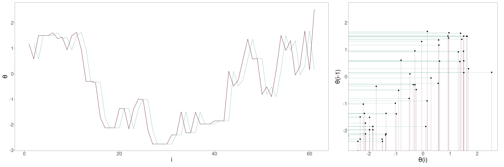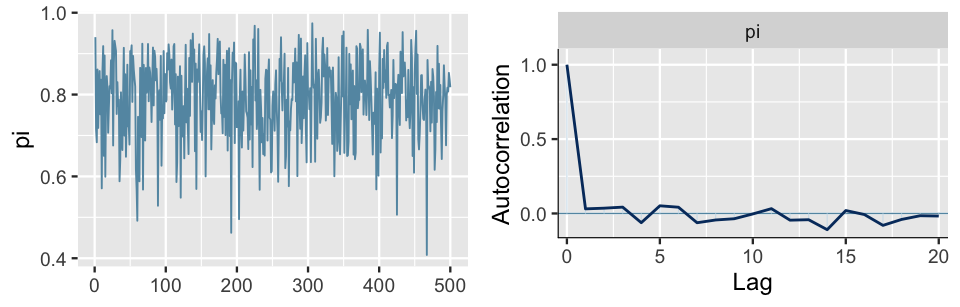
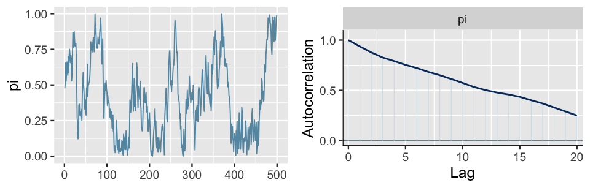
Número efectivo de muestras
Las muestras no son independientes. ¿A cuántas muestras independientes equivalen nuestras \(S\) muestras? \(N_{eff}\) es el número de muestras independientes que tienen el mismo poder de estimación que \(S\) muestras correlacionadas (el error de estimación es proporcional a \(\frac{1}{\sqrt{N_{eff}}}\))
\[N_{eff} = \frac{S}{1 + 2 \sum_{k=1}^\infty ACF(k)}\]
\(\hat{R}\)
El estadístico de Rubin–Gelman \(\hat{R}\) es un indicador de convergencia. Si múltiples cadenas se establizaron en un muestreo representativo del posterior, la diferencia promedio entre cadenas debe ser similar a la diferencia promedio en la cadena.
\[\hat{R} = \sqrt{\frac{\frac{S-1}{S} W + \frac{1}{S} B}{W}}\]
El valor 1 indica convergencia. Si una cadena se perdió/divergió, el \(\hat{R}\) será mucho mayor a 1.
Si tenemos \(M\) cadenas, \(\theta_m\), cada una de las cuales tiene \(S\) muestras \(\theta_m^{(s)}\). La varianza entre cadenas (\(B\)) es:
\[B = \frac{S}{M-1} \sum_{m=1}^M (\bar{\theta}^{(\bullet)}_{m} - \bar{\theta}^{(\bullet)}_{\bullet})^2\]
\[\bar{\theta}_m^{(\bullet)} = \frac{1}{S} \sum_{s = 1}^S \theta_m^{(s)}\]
\[\bar{\theta}^{(\bullet)}_{\bullet} = \frac{1}{M} \, \sum_{m=1}^M \bar{\theta}_m^{(\bullet)}\]
La varianza intra cadena (\(W\)) es:
\[W = \frac{1}{M} \, \sum_{m=1}^M s_m^2\]
\[ s_m^2 = \frac{1}{S-1} \, \sum_{s=1}^S (\theta^{(s)}_m - \bar{\theta}^{(\bullet)}_m)^2\]
El estimador de la varianza total
\[\widehat{\mbox{var}}^{+}\!(\theta|y) = \frac{N-1}{N}\, W \, + \, \frac{1}{N} \, B\]
\[\hat{R} \, = \, \sqrt{\frac{\widehat{\mbox{var}}^{+}\!(\theta|y)}{W}}\]

Hamiltonian Montecarlo
- Metropolis-Hastings (MG) es una exploración a ciegas del espacio de parámetros
- La distribución de propuesta de salto es fija
- En las colas de la distribución, se proponen tanto saltos que se acercan al grueso (bulk) de la distribución como saltos que se alejan. Se rechazan muchos saltos propuestos.
- Hamiltonian-Montecarlo (HMC) es una variante más eficiente de MCMC. Para lograr la eficiencia, los saltos propuestos se adaptan a la forma del posterior.
- La forma del posterior está en su gradiente
- HMC trata de aprovechar la geometría local del posterior para decidir dónde ir en la próxima iteración.
- Si bien MH no ignora por completo la forma del posterior, HMC utiliza más información (el gradiente)
- Para entender conceptualmente HMC se necesita un poco de imaginación y entender algo de Física
- \(p^*(\theta\mid y)\) es el posterior sin normalizar. Consideraremos \(-\log[p^*(\theta\mid y)]\).
- Los puntos de alta densidad de probabilidad (máximos locales de \(p^*(\theta\mid y)\)) se convierten en mínimos locales de \(-\log[p^*(\theta\mid y)]\)
- La lógica es la misma que en MH (después de todo, se trata de un algoritmo de MCMC): estamos en algún punto del espacio de parámetros y decidimos movernos a otro… Aquí cambia cómo proponemos un salto.
- Para ello, imaginamos un trineo (o culipatín, o bolita) que puede deslizarse por la superficie determinada por \(-\log[p^*(\theta\mid y)]\)
- Si soltamos el trineo en algún punto de la superficie, tenderá a deslizar hacia abajo de \(-\log[p^*(\theta\mid y)]\) por efecto de la gravedad. E irá cada vez más rápido.
- Está bueno que el trineo deslice hacia los mínimos de \(-\log[p^*(\theta\mid y)]\) pues son zonas de alta densidad de probabilidad
- Quisiéramos que nuestro trineo explore otras zonas del posterior, para eso en lugar de soltar el trineo le damos un impulso inicial (velocidad inicial o momento).
- Este impulso inicial será aleatorio
- Conociendo la posición inicial del trineo y el impulso que se le da (la velocidad inicial), la Física permite calcular cuál será su trayectoria (y por ende su posición después de un tiempo)
- La posición final después de un tiempo será el nuevo \(\theta\) propuesto. Es decir: mientras que en MH proponíamos un salto con la distribución \(q(\theta'\mid\theta)\), aquí lo hacemos con un momento inicial y estudiando la posición del trineo.
- Luego se acepta o se rechaza el salto propuesto
- HMC propone nuevos saltos de manera más sofisticada que MH
- Busca que los saltos propuestos sean hacia valores del parámetro más prometedores
Cómo calcular la trayectoria del trineo es una de las cuestiones claves del algoritmo. Planteamos la conservación de la energía:
\[\mathcal{H}(\theta,v) = U(\theta) + K(v)\]
\(\mathcal{H}\) se conoce como hamiltoniano y representa la energía total del sistema que es la suma de la energía potencial \(U(\theta)\) (función de la posición \(\theta\)) y la energía cinética \(K(v)\) (función de la velocidad \(v\)).
Se toma \(U(\theta) = -\log[p^*(\theta\mid y)]\) y \(K(v) = \frac{1}{2} m v^2\)
Las ecuaciones de Hamilton describen el cambio de \(\theta\) y de \(v\) en función del tiempo
\[\frac{d\theta}{dt} = \frac{\partial \mathcal{H}}{\partial v}\] \[\frac{dv}{dt} = -\frac{\partial \mathcal{H}}{\partial \theta}\]
Es necesario resolver estas ecuaciones… Queremos hallar la posición (\(\theta\)) del trineo tras un tiempo. No se pueden resolver analíticamente. Discretizamos el tiempo estudiando \(L\) pequeños intervalitos de duración \(\varepsilon\)
Se tiene:
\[\frac{dv}{dt} \approx \frac{v_{t+\varepsilon} - v_{t}}{\varepsilon} = \frac{v_{t_2} - v_{t_1}}{\varepsilon}\]
\[\frac{d\theta}{dt} \approx \frac{\theta_{t+\varepsilon} - \theta_{t}}{\varepsilon} = \frac{\theta_{t_2} - \theta_{t_1}}{\varepsilon}\]
con lo cual
\[v_{t_2} = v_{t_1} + \varepsilon \frac{dv}{dt} = v_{t_1}-\varepsilon \frac{\partial \mathcal{H}}{\partial \theta}\]
\[\theta_{t_2} = \theta_{t_1} + \varepsilon \frac{d\theta}{dt} = \theta_{t_1}-\varepsilon \frac{\partial \mathcal{H}}{\partial \theta}\]
Estas aproximaciones no son buenas…
Leapfrog integrator
Se parte de \(t\) y se busca \(v\) en \(t+\frac{\varepsilon}{2}\). Luego se busca \(\theta\) en \(t+\varepsilon\) usando el resultado anterior \(v\) en \(\frac{\varepsilon}{2}\).
\[v(t+\frac{\varepsilon}{2}) = v(t) - \frac{\varepsilon}{2} \frac{\partial \mathcal{H}}{\partial \theta}\rvert_t\]
\[\theta(t+\varepsilon) = \theta(t) + \varepsilon \frac{\partial \mathcal{H}}{\partial v}\rvert_{t+\frac{\varepsilon}{2}}\]
\[v(t+\varepsilon) = v(t+\frac{\varepsilon}{2}) - \frac{\varepsilon}{2} \frac{\partial \mathcal{H}}{\partial \theta}\rvert_{t+\varepsilon}\]
La elección de \(\varepsilon\) es clave para el algoritmo. Si \(L\cdot\varepsilon\) es pequeño, tomará mucho tiempo explorar el posterior. Con un valor muy grande, ocurrirán giros en U.
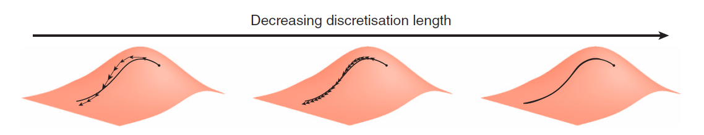- Propuesta: A partir de \(\theta^{(i)}\) disparar una bolita en alguna dirección aleatoria, con una velocidad (momento lineal) aleatoria
- Leapfrog integration: Calcular una serie de \(L\) pasos (leapfrog steps) de duración fija \(\varepsilon\) (step size): instantes dónde vamos a sacar una foto de la posición de la partícula
- Aceptación: Obtener la posición final \(\theta^{(i+1)}\) como la posición final luego de \(L\) steps siempre y cuando la aproximación haya sido buena (la energía se haya conservado)
Un \(\varepsilon\) pequeño da más resolución sobre la trayectoria, permitiendo que la bolita gire ángulos pronunciados (¿pero?).
Un \(\varepsilon\) grande hará que los saltos sean largos y podemos saltear el punto donde la partícula iba a girar (divergent transition).
Estadística Bayesiana – 2023